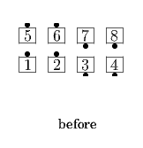
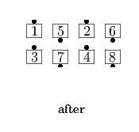

From Parallel Two-Faced Lines and other applicable 2 x 4 formations (such as Facing Lines, Back-to-Back Lines, and some T-Bones):
Ends Split Circulate as those facing out of the center box Crossover Circulate as those facing into the center box do a Crossover Circulate within that box. Parallel Two-Faced Lines end in Parallel Waves.
 
© Copyright 2004-2017 Vic Ceder and CALLERLAB Inc., The International Association of Square Dance Callers. Permission to reprint, republish, and create derivative works without royalty is hereby granted, provided this notice appears. Publication on the Internet of derivative works without royalty is hereby granted provided this notice appears. Permission to quote parts or all of this document without royalty is hereby granted, provided this notice is included. Information contained herein shall not be changed nor revised in any derivation or publication.